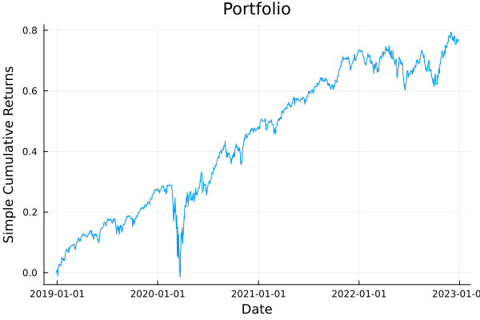

The source files can be found in examples/.
Clustering on a fundamentals panel
Feature matrices as a distance source builds its panel from a classification, which is one Panel Field per level and nothing else. A real desk has more than a taxonomy: it has a fundamentals table, one row per asset and one column per reported quantity, arriving with gaps and on wildly different scales.
This example takes that table end to end. A caller builds an AssetPanel with asset_panel, names the Panel Fields it wants clustered on with a FeatureDistance, and runs HierarchicalRiskParity through a cross-validation. Three things that a taxonomy never raises come up on the way:
- Blanks. A table with gaps needs a fill policy, and the policy that is legal depends on whether the field has an observation axis.
- Scale. The panel stores what you give it. A distance over columns on different scales is dominated by the largest, so the standardisation is the caller's and it happens before the panel is built.
- What was reported at all. The fill leaves an observed mask behind, and the selector can put it in the matrix as a feature in its own right.
The fundamentals below are hand-written to have the shape and the awkwardness of a real table — mixed scales, a few gaps, one field almost empty. They are not vendor data and no conclusion about these companies follows from them.
using PortfolioOptimisers, CSV, TimeSeries, DataFrames, PrettyTables, Clarabel, StatsPlots, GraphRecipes, Statistics, LinearAlgebra, Clustering1. The universe and the table
The same twenty-name S&P 500 slice as the other optimiser examples, and five reported quantities per asset: log market capitalisation, book-to-price, gross profitability, leverage and dividend yield. NaN marks a cell the table does not carry.
X = TimeArray(CSV.File(joinpath(@__DIR__, "..", "SP500.csv.gz")); timestamp = :Date)[(end - 1260):end]rd0 = prices_to_returns(X)slv = Solver(; name = :clarabel, solver = Clarabel.Optimizer, settings = Dict("verbose" => false), check_sol = (; allow_local = true, allow_almost = true))sector = Dict("AAPL" => "Technology", "AMD" => "Technology", "MSFT" => "Technology", "BAC" => "Financials", "JPM" => "Financials", "CVX" => "Energy", "XOM" => "Energy", "RRC" => "Energy", "GE" => "Industrials", "BBY" => "ConsumerDiscretionary", "HD" => "ConsumerDiscretionary", "KO" => "ConsumerStaples", "PEP" => "ConsumerStaples", "PG" => "ConsumerStaples", "WMT" => "ConsumerStaples", "JNJ" => "HealthCare", "LLY" => "HealthCare", "MRK" => "HealthCare", "PFE" => "HealthCare", "UNH" => "HealthCare")fundamentals = DataFrame("Asset" => ["AAPL", "AMD", "BAC", "BBY", "CVX", "GE", "HD", "JNJ", "JPM", "KO", "LLY", "MRK", "MSFT", "PEP", "PFE", "PG", "RRC", "UNH", "WMT", "XOM"], "log_mcap" => [14.7, 11.8, 12.5, 10.1, 12.6, 12.0, 12.7, 13.0, 13.1, 12.4, 13.2, 12.5, 14.6, 12.3, 12.1, 12.7, 9.2, 13.0, 13.1, 12.9], "book_to_price" => [0.05, 0.08, 0.95, 0.31, 0.62, 0.28, 0.02, 0.19, 0.78, 0.11, 0.06, 0.14, 0.06, 0.09, 0.27, 0.10, 1.42, 0.13, 0.21, 0.55], "gross_profitability" => [0.44, 0.21, 0.11, 0.09, 0.34, 0.16, 0.38, 0.32, 0.51, 0.29, 0.47, 0.36, 0.49, 0.26, 0.30, 0.33, NaN, 0.23, 0.13, 0.19], "leverage" => [1.71, 0.29, 5.90, 1.20, 0.55, 2.90, 8.10, 0.83, 6.40, 1.60, 0.72, 0.94, 0.42, 2.20, 0.61, 1.30, NaN, 0.88, 1.05, 0.48], "dividend_yield" => [0.005, NaN, 0.024, 0.041, 0.038, 0.003, 0.023, 0.029, 0.007, 0.030, 0.010, 0.026, 0.008, 0.027, 0.043, 0.024, NaN, 0.013, 0.015, 0.034])pretty_table(fundamentals; formatters = [(v, i, j) -> isa(v, AbstractFloat) ? round(v; digits = 4) : v], title = "The reported table, gaps included") The reported table, gaps included
┌────────┬──────────┬───────────────┬─────────────────────┬──────────┬────────────────┐
│ Asset │ log_mcap │ book_to_price │ gross_profitability │ leverage │ dividend_yield │
│ String │ Float64 │ Float64 │ Float64 │ Float64 │ Float64 │
├────────┼──────────┼───────────────┼─────────────────────┼──────────┼────────────────┤
│ AAPL │ 14.7 │ 0.05 │ 0.44 │ 1.71 │ 0.005 │
│ AMD │ 11.8 │ 0.08 │ 0.21 │ 0.29 │ NaN │
│ BAC │ 12.5 │ 0.95 │ 0.11 │ 5.9 │ 0.024 │
│ BBY │ 10.1 │ 0.31 │ 0.09 │ 1.2 │ 0.041 │
│ CVX │ 12.6 │ 0.62 │ 0.34 │ 0.55 │ 0.038 │
│ GE │ 12.0 │ 0.28 │ 0.16 │ 2.9 │ 0.003 │
│ HD │ 12.7 │ 0.02 │ 0.38 │ 8.1 │ 0.023 │
│ JNJ │ 13.0 │ 0.19 │ 0.32 │ 0.83 │ 0.029 │
│ JPM │ 13.1 │ 0.78 │ 0.51 │ 6.4 │ 0.007 │
│ KO │ 12.4 │ 0.11 │ 0.29 │ 1.6 │ 0.03 │
│ LLY │ 13.2 │ 0.06 │ 0.47 │ 0.72 │ 0.01 │
│ MRK │ 12.5 │ 0.14 │ 0.36 │ 0.94 │ 0.026 │
│ MSFT │ 14.6 │ 0.06 │ 0.49 │ 0.42 │ 0.008 │
│ PEP │ 12.3 │ 0.09 │ 0.26 │ 2.2 │ 0.027 │
│ PFE │ 12.1 │ 0.27 │ 0.3 │ 0.61 │ 0.043 │
│ PG │ 12.7 │ 0.1 │ 0.33 │ 1.3 │ 0.024 │
│ RRC │ 9.2 │ 1.42 │ NaN │ NaN │ NaN │
│ UNH │ 13.0 │ 0.13 │ 0.23 │ 0.88 │ 0.013 │
│ WMT │ 13.1 │ 0.21 │ 0.13 │ 1.05 │ 0.015 │
│ XOM │ 12.9 │ 0.55 │ 0.19 │ 0.48 │ 0.034 │
└────────┴──────────┴───────────────┴─────────────────────┴──────────┴────────────────┘The asset order of a table is not the asset order of the returns, and the panel is keyed by position rather than by name. Line the table up against rd0.nx once, here, rather than trusting two orders to agree.
row_of = Dict(a => i for (i, a) in pairs(fundamentals.Asset))order = [row_of[a] for a in rd0.nx]tbl = fundamentals[order, :]println("The table is aligned to the returns: ", tbl.Asset == rd0.nx)The table is aligned to the returns: true2. Scale is the caller's, and it happens before the panel
An AssetPanel stores what it is given. Nothing in the library standardises a Panel Field, and that is deliberate: what a column means — a level, a ratio, a rank, a log — decides what a sensible transform is, and the library will not guess.
It matters here because the default AngularDist is invariant to rescaling an asset's whole row and not at all to rescaling one column. log_mcap runs from 9 to 15 and dividend_yield from 0.003 to 0.043, so an unstandardised stack is a distance on market capitalisation with four decorations.
raw_fields = ["log_mcap", "book_to_price", "gross_profitability", "leverage", "dividend_yield"]pretty_table(DataFrame("Field" => raw_fields, "Smallest" => [minimum(filter(!isnan, tbl[!, f])) for f in raw_fields], "Largest" => [maximum(filter(!isnan, tbl[!, f])) for f in raw_fields], "Standard deviation" => [std(filter(!isnan, tbl[!, f])) for f in raw_fields]); formatters = [(v, i, j) -> isa(v, AbstractFloat) ? round(v; digits = 4) : v], title = "Five columns, five scales") Five columns, five scales
┌─────────────────────┬──────────┬─────────┬────────────────────┐
│ Field │ Smallest │ Largest │ Standard deviation │
│ String │ Float64 │ Float64 │ Float64 │
├─────────────────────┼──────────┼─────────┼────────────────────┤
│ log_mcap │ 9.2 │ 14.7 │ 1.2311 │
│ book_to_price │ 0.02 │ 1.42 │ 0.3674 │
│ gross_profitability │ 0.09 │ 0.51 │ 0.1284 │
│ leverage │ 0.29 │ 8.1 │ 2.2615 │
│ dividend_yield │ 0.003 │ 0.043 │ 0.0126 │
└─────────────────────┴──────────┴─────────┴────────────────────┘A cross-sectional z-score over the observed cells is the ordinary answer for a table of this shape. The blanks stay blank: standardising is not filling, and the fill policy is a separate decision made one step later.
function zscore_column(v) obs = filter(!isnan, v) m, s = mean(obs), std(obs) return [isnan(x) ? NaN : (x - m) / s for x in v]endzfields = Dict(f => zscore_column(tbl[!, f]) for f in raw_fields)Dict{String, Vector{Float64}} with 5 entries:
"log_mcap" => [1.76668, -0.588894, -0.0203067, -1.96975, 0.0609201, -0.426441, 0.142147, 0.385827, 0.467054, -0.101534, 0.548281, -0.0203067, 1.68546, -0.18276, -0.345214, 0.142147, -2.70079, 0.385827, 0.467054, 0.304601]
"book_to_price" => [-0.737687, -0.656024, 1.71219, -0.029943, 0.813905, -0.111606, -0.819349, -0.356594, 1.24944, -0.574361, -0.710466, -0.492698, -0.710466, -0.628803, -0.138827, -0.601582, 2.99158, -0.519919, -0.302152, 0.623359]
"gross_profitability" => [1.12739, -0.664138, -1.44306, -1.59885, 0.348467, -1.0536, 0.660038, 0.192682, 1.67264, -0.0409962, 1.36107, 0.504253, 1.51686, -0.274674, 0.0368965, 0.270575, NaN, -0.508352, -1.28728, -0.819923]
"leverage" => [-0.130097, -0.758005, 1.72267, -0.355613, -0.643036, 0.396108, 2.69549, -0.519223, 1.94377, -0.178737, -0.567863, -0.470582, -0.70052, 0.0865759, -0.616504, -0.311394, NaN, -0.497113, -0.421941, -0.673989]
"dividend_yield" => [-1.36427, NaN, 0.140828, 1.48749, 1.24985, -1.5227, 0.0616122, 0.536906, -1.20584, 0.616122, -0.968191, 0.299259, -1.12662, 0.378475, 1.64593, 0.140828, NaN, -0.730544, -0.572113, 0.932984]3. Building the panel
asset_panel takes the raw, blank-carrying form of each Panel Field and returns the panel a carrier holds. A NumericPanelInput carries one reported quantity, and panel_input bridges the sector classification off a UniverseSets into a CategoricalPanelInput.
Every input carries a fill policy, and the default NoPanelFill refuses a blank outright. That default is the right one: a blank that reaches a carrier is a silent zero later, so the build makes you say what a gap means.
The values here have no observation axis — one number per asset — so this is a static input, and the two directional policies are refused on it. There is no earlier observation to carry a value from. ConstantPanelFill is what a static table takes, and after the z-score, 0.0 is the cross-sectional mean.
sets = UniverseSets(; xkey = "nx", dict = Dict("nx" => rd0.nx, "nx_sector" => [sector[a] for a in rd0.nx]))inputs = [[NumericPanelInput(; name = f, vals = zfields[f], alg = ConstantPanelFill(; val = 0.0)) for f in raw_fields]; panel_input(sets, "nx_sector")]pnl = asset_panel(inputs)directional_refusal = try asset_panel([NumericPanelInput(; name = "log_mcap", vals = zfields["log_mcap"], alg = ForwardPanelFill())]) "no error"catch err sprint(showerror, err)endprintln(directional_refusal)ArgumentError: the Panel Field "log_mcap" is static, so it has no observation axis to carry a value along, and its fill policy ForwardPanelFill is directional. Use NoPanelFill or ConstantPanelFill, or give the raw values an observation axis.4. What the panel holds
The panel is static: every field is one value per asset, and there are no masks over an observation axis. feature_matrix stacks it to assets × features and feature_labels names the columns — one per numeric field, and one per level of the categorical one.
Z = feature_matrix(pnl)nz = feature_labels(pnl)pretty_table(DataFrame("Panel Field" => [f.name for f in pnl.pf], "Kind" => [string(nameof(typeof(f))) for f in pnl.pf], "Columns it contributes" => [count(l -> first(l) == f.name || l == f.name, nz) for f in pnl.pf]); title = "Six Panel Fields, $(size(Z, 2)) feature columns")println("Static panel: ", PortfolioOptimisers.panel_is_static(pnl))println("The labels rebuild the matrix: ", feature_matrix(pnl, nz) == Z) Six Panel Fields, 12 feature columns
┌─────────────────────┬───────────────────────┬────────────────────────┐
│ Panel Field │ Kind │ Columns it contributes │
│ String │ String │ Int64 │
├─────────────────────┼───────────────────────┼────────────────────────┤
│ log_mcap │ NumericPanelField │ 1 │
│ book_to_price │ NumericPanelField │ 1 │
│ gross_profitability │ NumericPanelField │ 1 │
│ leverage │ NumericPanelField │ 1 │
│ dividend_yield │ NumericPanelField │ 1 │
│ sector │ CategoricalPanelField │ 7 │
└─────────────────────┴───────────────────────┴────────────────────────┘
Static panel: true
The labels rebuild the matrix: true5. Clustering on named Panel Fields
sel on the FeatureDistance names what to stack. Because the panel names its own fields, a selector is readable configuration rather than a column count: ["book_to_price", "gross_profitability"] is a value hierarchy, ["sector"] is the classification, and nothing is everything the panel carries.
The cut is configuration and the panel is data, so one carrier serves every selector below.
rd = ReturnsResult(; nx = rd0.nx, X = rd0.X, ts = rd0.ts, pnl = pnl)onc = OptimalNumberClusters(; alg = 4)hierarchies = ["Correlation (no panel)" => nothing, "Every field" => FeatureDistance(), "Sector only" => FeatureDistance(; sel = ["sector"]), "Value and quality" => FeatureDistance(; sel = ["book_to_price", "gross_profitability"]), "Size and leverage" => FeatureDistance(; sel = ["log_mcap", "leverage"]), "Sector, then value" => FeatureDistance(; sel = ["sector", "book_to_price"])]cut_rows = DataFrame()cuts = Dict{String, Vector{Int}}()for (hname, de) in hierarchies cle = if isnothing(de) ClustersEstimator(; onc = onc) else ClustersEstimator(; de = de, onc = onc) end clr = clusterise(cle, rd) cuts[hname] = cutree(clr.res; k = 4) append!(cut_rows, DataFrame("Hierarchy" => hname, "Feature columns" => if isnothing(de) 0 else size(feature_matrix(de, nothing, rd, rd.X), 2) end, "Clusters chosen" => clr.k, "ARI against correlation" => round(randindex(cuts["Correlation (no panel)"], cuts[hname])[1]; digits = 3)))endpretty_table(cut_rows; title = "One panel, six hierarchies") One panel, six hierarchies
┌────────────────────────┬─────────────────┬─────────────────┬─────────────────────────┐
│ Hierarchy │ Feature columns │ Clusters chosen │ ARI against correlation │
│ String │ Int64 │ Int64 │ Float64 │
├────────────────────────┼─────────────────┼─────────────────┼─────────────────────────┤
│ Correlation (no panel) │ 0 │ 4 │ 1.0 │
│ Every field │ 12 │ 4 │ 0.222 │
│ Sector only │ 7 │ 4 │ 0.646 │
│ Value and quality │ 2 │ 4 │ 0.173 │
│ Size and leverage │ 2 │ 4 │ -0.063 │
│ Sector, then value │ 8 │ 4 │ 0.844 │
└────────────────────────┴─────────────────┴─────────────────┴─────────────────────────┘Read the last column as a measure of how much outside information each cut brings. A value hierarchy and a size hierarchy disagree with the correlation and with each other, which is the whole reason to reach for a panel: they are answering a question the returns do not contain.
The four-way cuts themselves show it plainly.
pretty_table(DataFrame(["Asset" => rd.nx; "Sector" => [sector[a] for a in rd.nx]; [hname => cuts[hname] for (hname, _) in hierarchies]...]); title = "The same twenty assets, cut six ways") The same twenty assets, cut six ways
┌────────┬───────────────────────┬────────────────────────┬─────────────┬─────────────┬───────────────────┬───────────────────┬────────────────────┐
│ Asset │ Sector │ Correlation (no panel) │ Every field │ Sector only │ Value and quality │ Size and leverage │ Sector, then value │
│ String │ String │ Int64 │ Int64 │ Int64 │ Int64 │ Int64 │ Int64 │
├────────┼───────────────────────┼────────────────────────┼─────────────┼─────────────┼───────────────────┼───────────────────┼────────────────────┤
│ AAPL │ Technology │ 1 │ 1 │ 1 │ 1 │ 1 │ 1 │
│ AMD │ Technology │ 1 │ 2 │ 1 │ 2 │ 2 │ 1 │
│ BAC │ Financials │ 2 │ 3 │ 1 │ 3 │ 3 │ 2 │
│ BBY │ ConsumerDiscretionary │ 1 │ 2 │ 1 │ 3 │ 4 │ 1 │
│ CVX │ Energy │ 2 │ 3 │ 2 │ 4 │ 2 │ 2 │
│ GE │ Industrials │ 2 │ 2 │ 1 │ 3 │ 4 │ 1 │
│ HD │ ConsumerDiscretionary │ 1 │ 1 │ 1 │ 1 │ 3 │ 1 │
│ JNJ │ HealthCare │ 3 │ 4 │ 3 │ 1 │ 1 │ 3 │
│ JPM │ Financials │ 2 │ 1 │ 1 │ 4 │ 3 │ 2 │
│ KO │ ConsumerStaples │ 4 │ 4 │ 4 │ 2 │ 2 │ 4 │
│ LLY │ HealthCare │ 3 │ 1 │ 3 │ 1 │ 1 │ 3 │
│ MRK │ HealthCare │ 3 │ 4 │ 3 │ 1 │ 2 │ 3 │
│ MSFT │ Technology │ 1 │ 1 │ 1 │ 1 │ 1 │ 1 │
│ PEP │ ConsumerStaples │ 4 │ 4 │ 4 │ 2 │ 4 │ 4 │
│ PFE │ HealthCare │ 3 │ 4 │ 3 │ 1 │ 2 │ 3 │
│ PG │ ConsumerStaples │ 4 │ 4 │ 4 │ 1 │ 1 │ 4 │
│ RRC │ Energy │ 2 │ 3 │ 2 │ 4 │ 4 │ 2 │
│ UNH │ HealthCare │ 3 │ 2 │ 3 │ 2 │ 1 │ 3 │
│ WMT │ ConsumerStaples │ 4 │ 2 │ 4 │ 3 │ 1 │ 4 │
│ XOM │ Energy │ 2 │ 3 │ 2 │ 3 │ 1 │ 2 │
└────────┴───────────────────────┴────────────────────────┴─────────────┴─────────────┴───────────────────┴───────────────────┴────────────────────┘6. The observed mask is a feature
The fill removed the blanks, and it left behind a record of which cells were reported. "name" => :observed puts that record in the matrix as one 0/1 column. On a sparse table "reported at all" is often a sharper signal than the value that was reported, and it is one selector entry away.
leverage and gross_profitability each have one gap here, and dividend_yield two.
obs_rows = DataFrame()for f in raw_fields m = feature_matrix(pnl, [f => :observed]) append!(obs_rows, DataFrame("Panel Field" => f, "Reported" => Int(sum(m)), "Missing" => Int(length(m) - sum(m))))endpretty_table(obs_rows; title = "What the fill policy recorded")de_reported = FeatureDistance(; sel = ["book_to_price", "gross_profitability", "gross_profitability" => :observed, "dividend_yield" => :observed])println("The selector's own labels: ", feature_labels(de_reported, nothing, rd, rd.X)) What the fill policy recorded
┌─────────────────────┬──────────┬─────────┐
│ Panel Field │ Reported │ Missing │
│ String │ Int64 │ Int64 │
├─────────────────────┼──────────┼─────────┤
│ log_mcap │ 20 │ 0 │
│ book_to_price │ 20 │ 0 │
│ gross_profitability │ 19 │ 1 │
│ leverage │ 19 │ 1 │
│ dividend_yield │ 18 │ 2 │
└─────────────────────┴──────────┴─────────┘
The selector's own labels: Any["book_to_price", "gross_profitability", "gross_profitability" => :observed, "dividend_yield" => :observed]An :observed entry on a field that never had a blank is a constant column. That is the honest reading — nothing was missing — but a constant column adds nothing to a cosine and it is worth knowing you have added one.
7. Through a cross-validation
Nothing above is special to the panel route: HierarchicalRiskParity takes the clustering estimator, and cross_val_predict walks it forward. One year of training, quarterly rebalances.
A static panel has no observation axis, so a fold has nothing to slice on it: the same twenty rows describe the universe in every window. That is the property the whole route is for. A correlation hierarchy is refitted from scratch every fold; this one is not refitted at all.
walk = IndexWalkForward(252, 63)function backtest(de) cle = if isnothing(de) ClustersEstimator(; onc = onc) else ClustersEstimator(; de = de, onc = onc) end return cross_val_predict(HierarchicalRiskParity(; opt = HierarchicalOptimiser(; pe = EmpiricalPrior(), cle = cle, slv = slv), r = Variance()), rd, walk)endfunction backtest_row(name, p) r = p.mrd.X turn = mean(abs, reduce(vcat, [p.pred[i + 1].res.w - p.pred[i].res.w for i in 1:(length(p.pred) - 1)])) return (; Hierarchy = name, var"Annual return" = mean(r) * 252, var"Annual volatility" = std(r) * sqrt(252), var"Sharpe ratio" = mean(r) / std(r) * sqrt(252), var"Maximum drawdown" = expected_risk(MaximumDrawdown(), p), var"Mean weight change" = turn)endbt = ["Correlation" => nothing, "Every field" => FeatureDistance(), "Sector only" => FeatureDistance(; sel = ["sector"]), "Value and quality" => FeatureDistance(; sel = ["book_to_price", "gross_profitability"])]results = [(name, backtest(de)) for (name, de) in bt]pretty_table(DataFrame([backtest_row(name, p) for (name, p) in results]); formatters = [(v, i, j) -> isa(v, AbstractFloat) ? round(v; digits = 4) : v], title = "Out-of-sample, $(length(last(first(results)).pred)) quarterly rebalances") Out-of-sample, 16 quarterly rebalances
┌───────────────────┬───────────────┬───────────────────┬──────────────┬──────────────────┬────────────────────┐
│ Hierarchy │ Annual return │ Annual volatility │ Sharpe ratio │ Maximum drawdown │ Mean weight change │
│ String │ Float64 │ Float64 │ Float64 │ Float64 │ Float64 │
├───────────────────┼───────────────┼───────────────────┼──────────────┼──────────────────┼────────────────────┤
│ Correlation │ 0.197 │ 0.1956 │ 1.0071 │ 0.3085 │ 0.0124 │
│ Every field │ 0.1901 │ 0.1993 │ 0.9536 │ 0.3055 │ 0.0062 │
│ Sector only │ 0.1947 │ 0.1966 │ 0.99 │ 0.3081 │ 0.0056 │
│ Value and quality │ 0.1877 │ 0.1982 │ 0.9473 │ 0.3122 │ 0.006 │
└───────────────────┴───────────────┴───────────────────┴──────────────┴──────────────────┴────────────────────┘The Mean weight change column is the one to read. Every panel-fed hierarchy turns over less than the correlation one, and by a wide margin, because a table that does not move between folds gives a dendrogram that does not move either.
plot_portfolio_cumulative_returns(last(results[2]))
8. When the table does move
A fundamentals table that is restated every quarter is a time-varying input: the values carry an observation axis, and a fold slices it alongside the returns. Nothing about the selector, the distance or the optimiser changes — only the rank of what goes into NumericPanelInput.
Two things do change, and both are consequences of having an observation axis at last:
ForwardPanelFillbecomes legal, and it is the policy that is safe across a fold, because it only ever carries a value forward in time.- The
FeatureDistanceneeds a collapse rule,alg, to turn the stack of periods into one distance matrix.
T, N = size(rd.X)drift = zeros(T, N)for t in 1:T, i in 1:N drift[t, i] = zfields["book_to_price"][i] + sum(view(rd.X, 1:t, i))enddrift[1:5, 1:2] .= NaNpnl_tv = asset_panel([NumericPanelInput(; name = "book_to_price", vals = drift, alg = ForwardPanelFill()), NumericPanelInput(; name = "log_mcap", vals = repeat(transpose(zfields["log_mcap"]), T), alg = ConstantPanelFill(; val = 0.0)), panel_input(sets, "nx_sector")])rd_tv = ReturnsResult(; nx = rd0.nx, X = rd0.X, ts = rd0.ts, pnl = pnl_tv)pretty_table(DataFrame("Panel" => ["Static (§3)", "Time-varying (§8)"], "Static?" => [PortfolioOptimisers.panel_is_static(pnl), PortfolioOptimisers.panel_is_static(pnl_tv)], "Feature Matrix" => [string(size(feature_matrix(pnl))), string(size(feature_matrix(pnl_tv)))], "After a 100-row, 3-asset view" => [string(size(feature_matrix(PortfolioOptimisers.port_opt_view(rd, 1:100, [1, 2, 3]).pnl))), string(size(feature_matrix(PortfolioOptimisers.port_opt_view(rd_tv, 1:100, [1, 2, 3]).pnl)))]); title = "What a fold slices, and what it leaves alone") What a fold slices, and what it leaves alone
┌───────────────────┬─────────┬────────────────┬───────────────────────────────┐
│ Panel │ Static? │ Feature Matrix │ After a 100-row, 3-asset view │
│ String │ Bool │ String │ String │
├───────────────────┼─────────┼────────────────┼───────────────────────────────┤
│ Static (§3) │ true │ (20, 12) │ (3, 12) │
│ Time-varying (§8) │ false │ (1260, 20, 9) │ (100, 3, 9) │
└───────────────────┴─────────┴────────────────┴───────────────────────────────┘The view cut both panels to three assets, and only the time-varying one lost the observations outside the fold. The static panel has no observation axis to cut, so the row half of the view does nothing to it. Both are correct, and which one you want is a statement about the data, not about the library.
The sector field on the time-varying panel is a static input that met a time-varying one, so asset_panel lifted it: it presents the observation axis and stores its values once.
collapse_rows = DataFrame()for alg in (LastObservation(), AggregateFeatures(), AggregateDistances(), StackObservations()) de = FeatureDistance(; alg = alg) clr = clusterise(ClustersEstimator(; de = de, onc = onc), rd_tv) append!(collapse_rows, DataFrame("Collapse" => string(nameof(typeof(alg))), "Clusters chosen" => clr.k, "Mean distance" => round(mean(clr.D); digits = 4), "ARI against correlation" => round(randindex(cuts["Correlation (no panel)"], cutree(clr.res; k = 4))[1]; digits = 3)))endpretty_table(collapse_rows; title = "One time-varying panel, four collapse rules")bt_tv = cross_val_predict(HierarchicalRiskParity(; opt = HierarchicalOptimiser(; pe = EmpiricalPrior(), cle = ClustersEstimator(; de = FeatureDistance(), onc = onc), slv = slv), r = Variance()), rd_tv, walk)pretty_table(DataFrame([backtest_row("Static panel", last(results[2])), backtest_row("Time-varying panel", bt_tv)]); formatters = [(v, i, j) -> isa(v, AbstractFloat) ? round(v; digits = 4) : v], title = "The same optimiser over the two panel shapes") One time-varying panel, four collapse rules
┌────────────────────┬─────────────────┬───────────────┬─────────────────────────┐
│ Collapse │ Clusters chosen │ Mean distance │ ARI against correlation │
│ String │ Int64 │ Float64 │ Float64 │
├────────────────────┼─────────────────┼───────────────┼─────────────────────────┤
│ LastObservation │ 4 │ 0.3871 │ 0.549 │
│ AggregateFeatures │ 4 │ 0.4355 │ 0.527 │
│ AggregateDistances │ 4 │ 0.4278 │ 0.527 │
│ StackObservations │ 4 │ 0.4239 │ 0.527 │
└────────────────────┴─────────────────┴───────────────┴─────────────────────────┘
The same optimiser over the two panel shapes
┌────────────────────┬───────────────┬───────────────────┬──────────────┬──────────────────┬────────────────────┐
│ Hierarchy │ Annual return │ Annual volatility │ Sharpe ratio │ Maximum drawdown │ Mean weight change │
│ String │ Float64 │ Float64 │ Float64 │ Float64 │ Float64 │
├────────────────────┼───────────────┼───────────────────┼──────────────┼──────────────────┼────────────────────┤
│ Static panel │ 0.1901 │ 0.1993 │ 0.9536 │ 0.3055 │ 0.0062 │
│ Time-varying panel │ 0.2018 │ 0.1985 │ 1.017 │ 0.3006 │ 0.0132 │
└────────────────────┴───────────────┴───────────────────┴──────────────┴──────────────────┴────────────────────┘The time-varying panel earns a better ratio here and pays for it in the last column: it turns over more than twice as much, because a table that is restated every day gives a dendrogram that moves every fold. That is the same trade the static route wins, read from the other side, and it is the reason the shape of the input is a modelling decision rather than a formatting one.
9. Summary
asset_panelis the build seam. It takes the raw, blank-carrying table and returns theAssetPanelaReturnsResultholds.- A fill policy is compulsory:
NoPanelFillrefuses a blank rather than letting a silent zero through. A static input takesConstantPanelFill; the directional policies need an observation axis and are refused without one. - Standardisation is the caller's, and it happens before the panel is built. The default
AngularDistis invariant to rescaling a row and not to rescaling a column. selnames Panel Fields, so a hierarchy is configured in the table's own vocabulary. An:observedentry turns "was this reported" into a feature.- A static panel is not sliced by an observation fold, which is what makes a fundamentals-fed hierarchy stop churning between rebalances. A time-varying panel is sliced, and it needs a collapse rule.
- Everything downstream —
ClustersEstimator,HierarchicalRiskParity,cross_val_predict— is unchanged. The panel is data on the carrier, and only the distance estimator knows it is there.
This page was generated using Literate.jl.